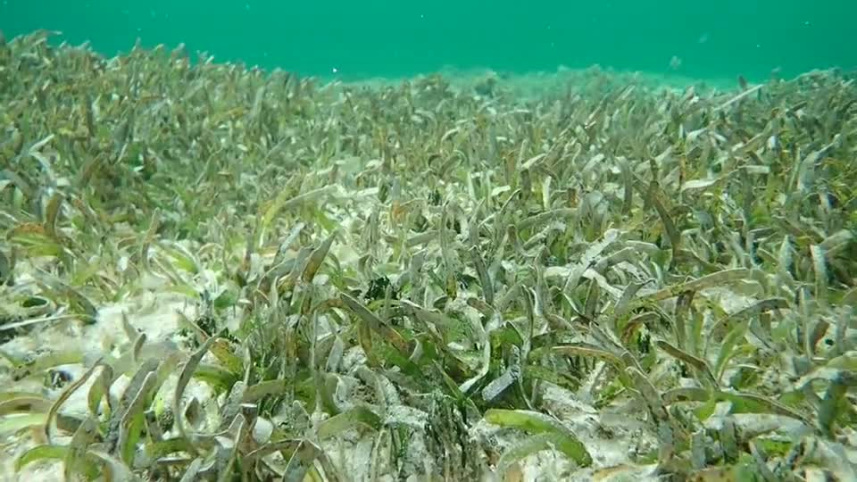
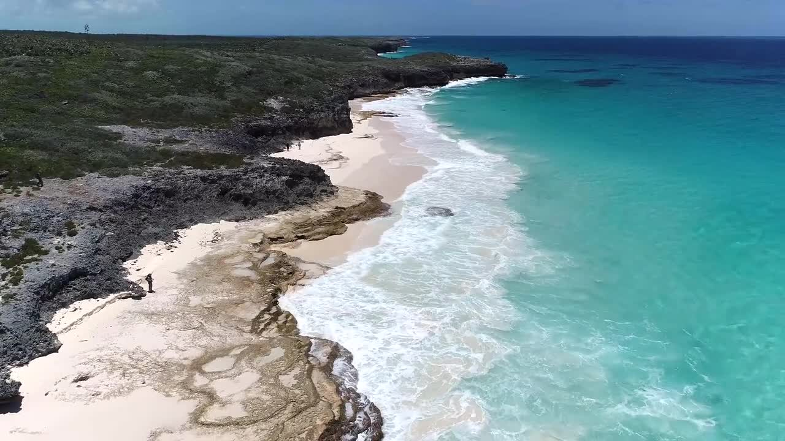
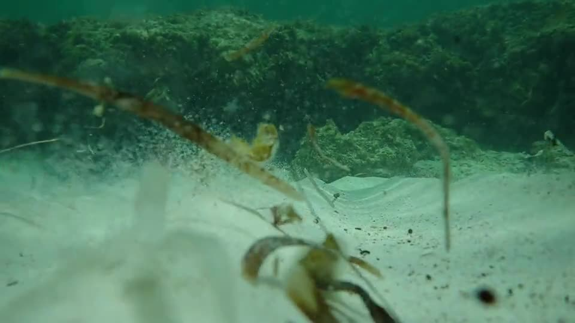
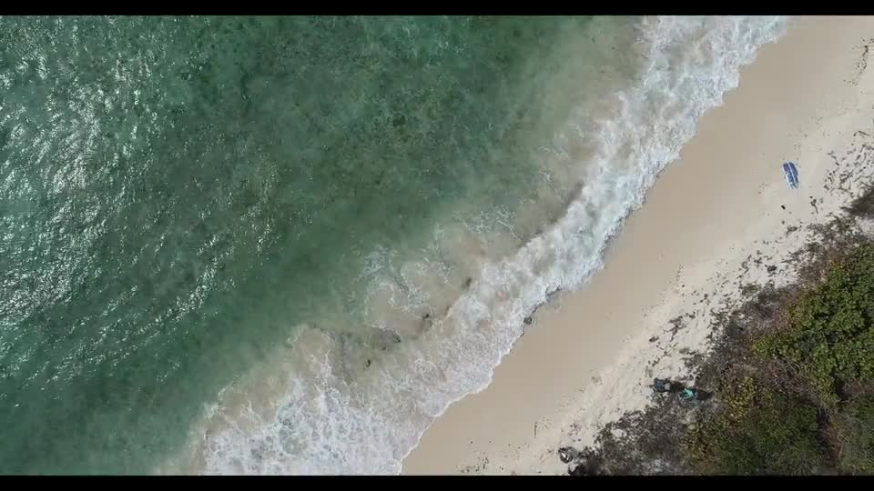
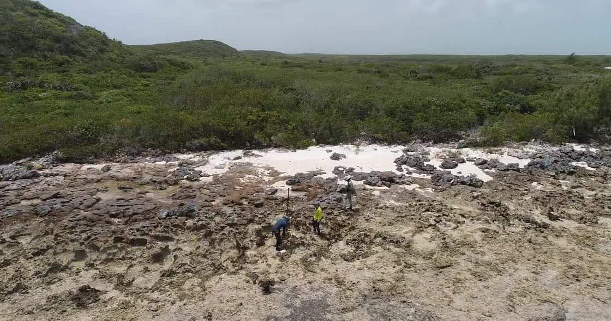

Modern Carbonate Environments
Seagrass meadow
Many sedimentary rocks we study formed in shallow settings that were full of life, and seagrass meadows help show how ecology and sedimentation are coupled.
Team
The group brings together sedimentology, geochemistry, stratigraphy, computation, and field experience across projects on sea level, carbonate systems, stratigraphy, and past climate. Each person manages their own research projects with mentorship and support from the PI, and we work together to share ideas, data, and skills.
Fieldwork In Motion
Drone surveys, shoreline traverses, and sample-scale observations connect landscapes to the stratigraphic and geochemical questions that drive the group's research.

Fieldwork In Motion
These videos show the modern coastlines, bedforms, and biologically active environments that help the group interpret ancient carbonate rocks and reconstruct past sea level.

Modern Carbonate Environments
Many sedimentary rocks we study formed in shallow settings that were full of life, and seagrass meadows help show how ecology and sedimentation are coupled.

Transport And Bedforms
Grain transport creates bedforms with distinctive geometries that can later be read from preserved stratification in the rock record.

Coastal Transects
Shore-parallel traverses help the team tie facies changes, shoreline position, and sampling targets to the geometry of the present-day carbonate coast.

Middle Caicos
Dunes, fossil corals, and fossil beaches preserve evidence of higher past sea level, and the team closes the loop by mapping contacts and sampling material for ages.
Current Members

Principal Investigator
Blake is an Associate Professor in the School of Earth and Ocean Sciences at UVic. His research combines sedimentology, geochemistry, geospatial data, and quantitative modeling to reconstruct how Earth systems respond to changing boundary conditions.


MSc Candidate
Miranda is using machine learning and rich observations of coastal change in Canada to improve predictions of coastal dynamics and future risk.

Postdoctoral Researcher
Argelia develops numerical models to simulate the seafloor lava accretion processes. By studying environments like the Juan de Fuca Ridge, she aims to pinpoint the most effective locations for carbon capture and sequestration.
Alumni And Past Members


NSERC USRA, 2021 to 2022
Kristyn worked on software and models for carbonate facies and sea-level inference and is now a graduate student in SEOS at UVic.